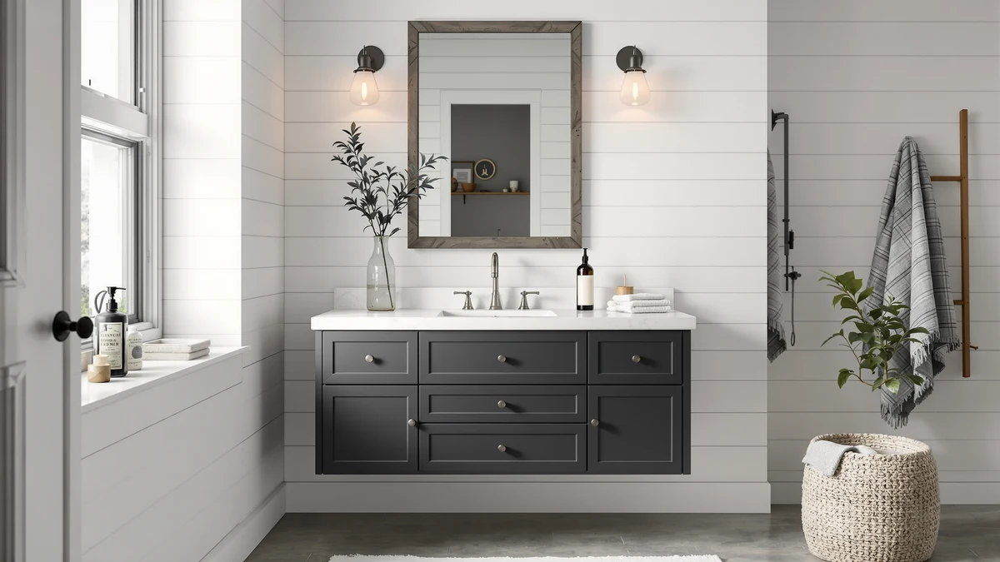

Things to Know Before You Buy
- A freestanding vanity typically costs $150 to $500 and installs in a few hours; a floating vanity often needs new wall blocking added, which pushes both the price and the install time higher.
- Floating vanities lift the cabinet off the floor, which makes a small bathroom look larger and lets you mop or vacuum underneath in one pass.
- Freestanding vanities transfer their weight straight to the floor, so they generally carry heavier stone tops and fuller storage loads without extra reinforcement.
- Plumbing on a floating vanity usually needs to be moved higher on the wall, which adds a step most freestanding installs skip entirely.
- Check the wall behind your bathroom before you buy either option. Floating vanities need solid framing, and a contractor should confirm it can take the load before you order one.
The floating vs freestanding vanity decision usually comes down to how your bathroom is framed and how much floor space you're willing to give up. One style bolts to the wall studs and hovers above the tile, leaving the floor beneath it open. The other stands on its own legs or a base, the way vanities have been built for decades. Both give you a sink, a counter, and storage, but they ask different things of your walls, your budget, and your plumbing.
We compared install requirements, weight limits, cleaning, and price across both styles, along with three freestanding vanities that show what you get if you go that route. Below, we break down build quality, cost, and day-to-day use so you can match the choice to your bathroom instead of just your taste.
Quick Answer
A freestanding vanity wins on price, ease of install, and weight capacity. You can find a solid 30-inch model for $250 to $300 and have it plumbed in within an afternoon. A floating vanity wins on visual space and easy cleaning, since the floor underneath stays open, but it needs wall blocking and moved plumbing before it goes up. Choose the freestanding vanity if you want a straightforward install and maximum storage. Choose the floating vanity if you're working with a small bathroom and want it to feel bigger.
What is Floating?
A floating vanity, also called a wall-mounted vanity, hangs from brackets or a ledger board anchored into the wall studs rather than resting on legs. The cabinet, countertop, and sink attach as a single unit that appears to hover a few inches above the floor. Because nothing touches the ground, you can see the wall and floor tile continue underneath the cabinet, which is the main visual signature of this style.
Installing one means opening up the wall in most cases. The studs behind a standard bathroom wall rarely line up with the mounting points on a given cabinet, so a contractor usually adds a horizontal blocking board between the studs to spread the load and give the brackets something solid to grab. The plumbing supply and drain lines also typically need to move higher on the wall, since a floating vanity sits a few inches taller off the floor than a comparable freestanding unit.
The appeal in the floating vs freestanding vanity comparison is almost entirely about space. A floating vanity works especially well in a small or narrow bathroom, since the open floor beneath it reads as more square footage than it actually is. It also simplifies floor cleaning, since there's no toe-kick or cabinet base to clean around.
What is Freestanding Vanity?
A freestanding vanity is a self-contained cabinet that sits directly on the floor, either on four exposed legs or a solid base with a toe-kick. It arrives as a complete unit, cabinet, countertop, and sink included, and installation mostly involves setting it in place, leveling it, and connecting the existing water and drain lines. The ONBRILL 36-inch model in our picks below follows this exact format, with four solid legs supporting a two-drawer, two-door cabinet.
Because the weight rests on the floor instead of the wall, a freestanding vanity doesn't require any special wall reinforcement. Standard studs behind a single anchor point are enough to keep it from tipping, and the floor itself carries the bulk of the load. That makes freestanding vanities the more forgiving option for a straightforward swap, especially in an older home where you can't always predict what's inside the wall.
The tradeoff shows up at the base. A freestanding vanity's legs or toe-kick sit right where dust, hair, and splashed water collect, and cleaning under and around it takes more effort than wiping an open floor. In the floating vs freestanding vanity decision, this is the option that trades a little visual openness for a much simpler install.
Head-to-Head: Build Quality & Durability
Weight capacity is where the floating vs freestanding vanity gap matters most. A freestanding vanity transfers its full load, cabinet, countertop, stored towels, and everyday use, straight down through its legs or base to the floor. That's why models like the CITTANEO 36-inch in our picks can carry a heavier engineered stone top without any special reinforcement. A floating vanity depends entirely on its mounting brackets and the wall framing behind it, which caps how much weight the whole assembly can safely hold.
Durability over time follows a similar pattern. If the wall blocking behind a floating vanity is undersized or installed poorly, the cabinet can sag or pull away from the wall over time, especially if someone leans on it or sits on the edge. A freestanding vanity doesn't have that failure point since gravity does the work of keeping it in place. The main durability risk for a freestanding unit is moisture at the base, where water can pool against the cabinet material if the bathroom floor isn't sloped or sealed well.
Neither style is inherently more fragile than the other, but a floating vanity puts more of the burden on the installer getting the wall prep right the first time, while a freestanding vanity puts more of the burden on keeping water away from the cabinet base.
Head-to-Head: Price & Value
On sticker price alone, a freestanding vanity usually costs less. A 31-inch model like the Concho in our picks runs around $275, and a 36-inch unit with a stone top, like the CITTANEO, lands closer to $400. Installation is typically a plumber's afternoon, since the water and drain lines already sit where a freestanding cabinet expects them.
A floating vanity often carries a similar or slightly higher cabinet price, but the real cost difference shows up in labor. Adding wall blocking and moving supply lines higher usually means budgeting for a contractor day beyond the plumbing hookup, which can add several hundred dollars depending on your bathroom's existing wall structure.
Value comes down to what you're solving for. If your priority is the lowest total cost, a freestanding vanity in the floating vs freestanding vanity comparison gets you there faster and cheaper. If your priority is making a small bathroom feel larger, the added labor cost of a floating vanity buys you something a freestanding unit can't match.
Head-to-Head: Use Experience
Day to day, the biggest difference between the two shows up when you clean the bathroom floor. With a floating vanity, you run a mop or vacuum straight underneath without navigating legs or a toe-kick. A freestanding vanity, including any of the picks below, has a base that collects dust and stray hair, so you're crouching down or using a narrow attachment to get the corners.
Storage capacity tends to favor freestanding models. Because the cabinet can extend closer to the floor, a freestanding vanity like the Concho 31-inch offers four full-depth drawers, while a floating vanity of similar width usually loses a few inches of usable interior space to keep the overall unit light enough for its brackets. If you store a lot of bathroom supplies, that difference adds up.
Everyday stability is the other factor. A freestanding vanity doesn't flex or creak when you lean on the counter edge, since the weight goes straight to the floor. A floating vanity, if properly installed with solid blocking, should feel equally stable, but a rushed or DIY install can leave a slight give at the front edge that a freestanding cabinet never has to worry about.
When to Choose Floating
In the floating vs freestanding vanity decision, pick the floating style if your bathroom is small or narrow and you want the floor space to read as open as possible. It's also the better call if easy cleaning matters more to you than maximum storage, since nothing sits on the floor to work around. A modern or minimalist bathroom design also tends to favor the clean lines a floating vanity creates.
Budget for a contractor to check the wall before you order one. If the studs don't line up with a standard mounting pattern, or if the plumbing needs to move higher on the wall, that prep work adds time and cost you should plan for upfront rather than discover mid-project.
When to Choose Freestanding Vanity
Choose a freestanding vanity if you want the simplest possible install, the widest range of styles and sizes, or the most storage for your money. It's also the safer choice in an older home where you can't be certain what condition the wall framing is in, since a freestanding unit doesn't depend on that framing to hold its weight.
It's the better fit, too, if you're working with a tighter budget or want to avoid opening up the wall at all. Any of the three vanities in our picks below install with standard plumbing hookups and don't require the extra prep a floating vanity needs.
Our Top Picks
If you land on the freestanding side of this comparison, these three cover a range of widths and finishes, from a compact fluted cabinet to a wider unit with a stone-look top.

Editor's Pick
ONBRILL Bathroom Vanity with Sink
A 36-inch freestanding cabinet on four solid legs, with two drawers, two doors, and an integrated ceramic sink that resists chips and stains.
$282.99
Check Price on Amazon
Best Value
CITTANEO 36" Bathroom Vanity with
A 36-inch freestanding vanity with a black engineered stone top, soft-closing doors, and open side storage for towels within reach.
$414.99
Check Price on Amazon
Premium Choice
Concho 31'' Fluted Bathroom Vanity
A 31-inch fluted oak vanity with a marble-look top, four spacious drawers, and a one-piece ceramic sink built to resist scratches.
$274.99
Check Price on AmazonFrequently Asked Questions
Is a floating vanity harder to install than a freestanding vanity?
Yes, in most cases. A floating vanity mounts to the wall studs with brackets or a ledger board, so the installer often needs to open the wall to add blocking if the studs don't line up with the cabinet. A freestanding vanity sits on the floor and only needs the water and drain lines connected, which is why most freestanding units go in within a few hours.
Do floating vanities need extra wall support?
Almost always. Because the full weight of the cabinet, countertop, and sink hangs from the wall rather than resting on the floor, a floating vanity needs solid blocking behind the drywall rather than a couple of screws into studs. Skipping that step is the most common reason a floating vanity comes loose within a year or two.
Which is easier to clean, a floating or freestanding vanity?
A floating vanity wins here. With the cabinet lifted off the floor, you can mop or vacuum underneath in one pass instead of working around legs and a toe-kick. A freestanding vanity, like the Concho model in our picks, collects dust and moisture at the base, which means more frequent cleaning right where water tends to pool.
Can a floating vanity hold as much weight as a freestanding one?
Not usually. Most floating vanities carry a lower rated weight capacity than a freestanding cabinet of the same size, since the mounting brackets and wall framing set the limit rather than the cabinet material. Freestanding vanities transfer weight straight to the floor, so they typically handle heavier stone tops and fuller storage loads without added reinforcement.
Which option is better for a small bathroom?
A floating vanity usually makes a small bathroom look and feel bigger, since the visible floor space extends underneath the cabinet uninterrupted. A freestanding vanity can still work in a small bathroom if you pick a narrow width, like a 24-inch model, but it will always read as a more solid, floor-anchored piece of furniture in the room.
Final Verdict
The floating vs freestanding vanity choice doesn't have one universal winner. It depends on your bathroom's size, your wall framing, and your budget. A freestanding vanity like the ONBRILL 36-inch is the easier, more affordable install for most homes and gives you the most storage per dollar. A floating vanity costs more to put in but pays off in a small bathroom where every visible inch of floor matters.